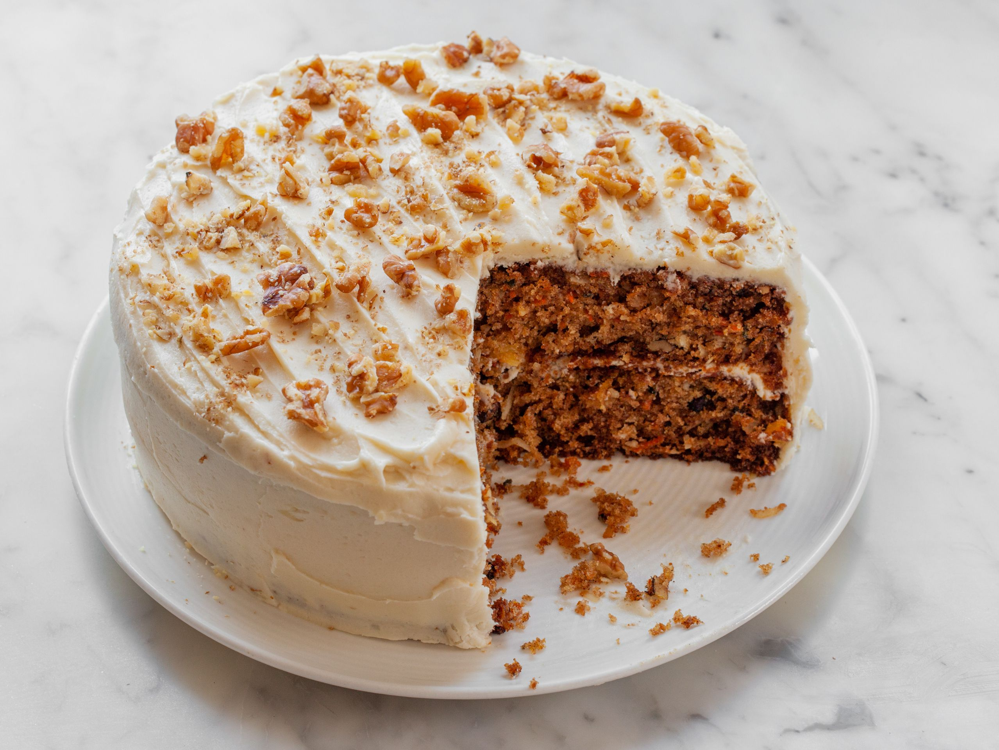

Carrot Cake

Description
This is the only carrot cake recipe you’ll ever need.
Ingredients
Cake
- 60 gr golden raisins (optional)
- 50 ml dark rum (optional)
- 130 gr chopped walnuts
- 450 gr pound carrots, peeled, coarsely grated
- 240 ml buttermilk, room temperature
- 300 gr all-purpose flour
- 2 teaspoons ground cinnamon
- 2 teaspoons ground ginger
- ½ teaspoon freshly grated nutmeg
- 2 teaspoons baking powder
- 1½ teaspoons salt
- ¾ teaspoon baking soda
- 4 large eggs
- 150 gr granulated sugar
- 150 gr dark brown sugar
- 2 teaspoons vanilla extract
- 240 ml vegetable oil
Frosting
- 340 gr cream cheese, room temperature
- 170 gr unsalted butter, room temperature
- 1 teaspoon vanilla extract
- Generous pinch of salt
- 500 gr powdered sugar
Steps
- Preheat oven to 175°C. Lightly coat two cake pans with nonstick spray. Line bottoms with
parchment paper rounds; lightly coat rounds with nonstick spray. If using raisins and rum, heat together in
a small saucepan over low just until warm, about 2 minutes. Remove from heat and let sit until liquid is
absorbed and raisins are plump, 15–20 minutes.
- Meanwhile, toast walnuts on a rimmed baking sheet, tossing once, until golden brown, 8–10 minutes; let cool.
Combine carrots and buttermilk in a medium bowl.
- Whisk flour, cinnamon, ginger, nutmeg, baking powder, salt, and baking soda in a large bowl. Using an
electric mixer on high speed, beat eggs, granulated sugar, brown sugar, and vanilla extract until pale and
thick, about 4 minutes. Reduce speed to medium-low and gradually stream in oil. Add dry ingredients in 3
additions, alternating with carrot mixture in 2 additions, beginning and ending with dry ingredients; mix
until smooth. Fold in raisins, if using, and walnuts with a rubber spatula. Scrape batter into prepared
pans.
- Bake cakes, rotating pans halfway through, until a tester inserted into the center comes out clean, 35–45
minutes. Transfer pans to a wire rack and let cakes cool 10 minutes. Run a knife around sides of cakes and
invert onto wire rack; remove parchment. Let cool completely.
- Using an electric mixer on high speed, beat cream cheese and butter in a medium bowl until smooth, about 1
minute. Beat in vanilla extract and salt. Reduce speed to low and gradually mix in powdered sugar. Increase
speed to high and beat frosting until light and fluffy, about 2 minutes.
- Place 1 cake, domed side down, on a platter. Spread frosting evenly over top. Place remaining cake,
domed side down, on top. Spread top and sides with frosting and chill 30 minutes to let frosting
set. Spread remaining frosting over top and sides, swirling decoratively.